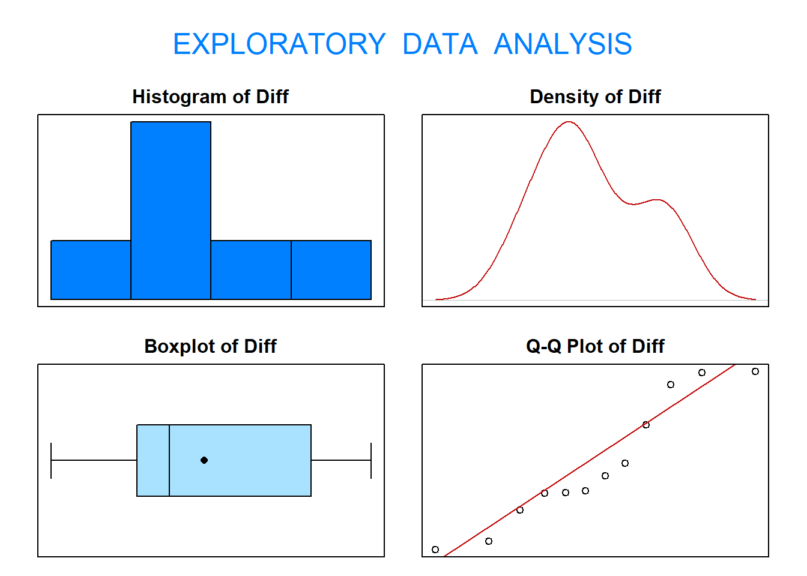
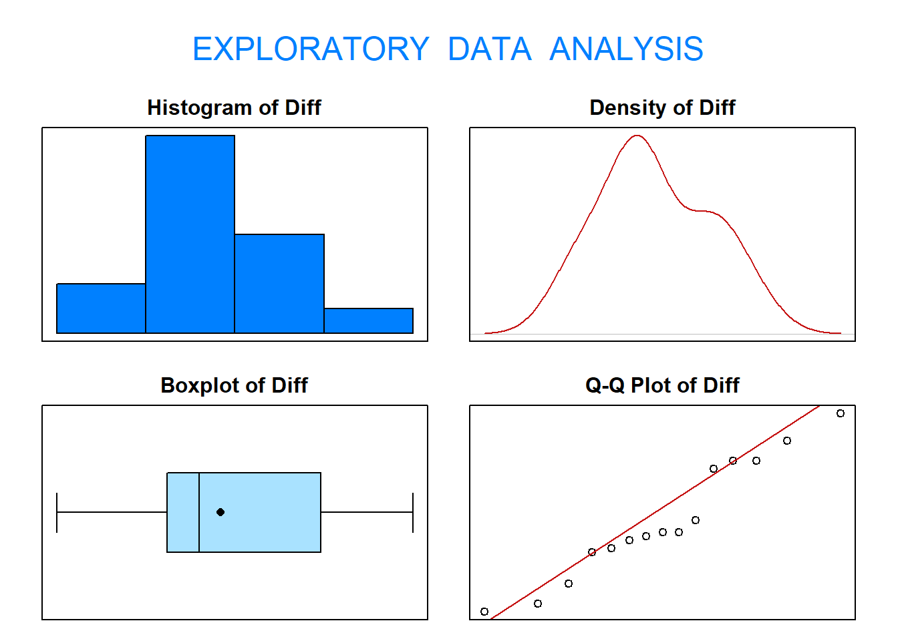
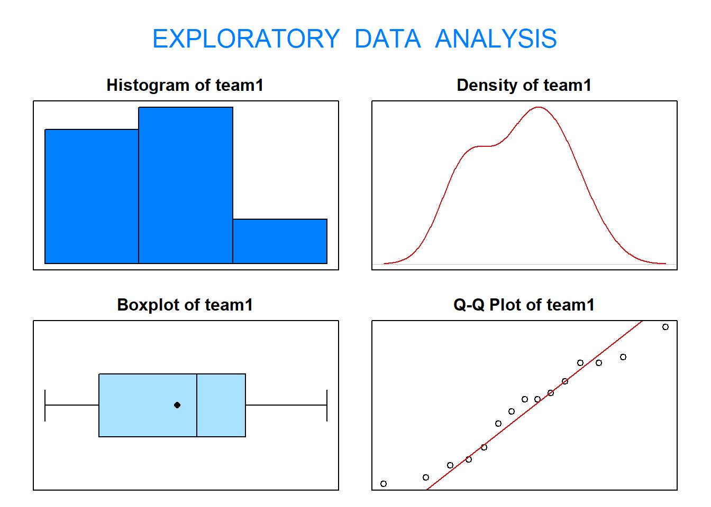
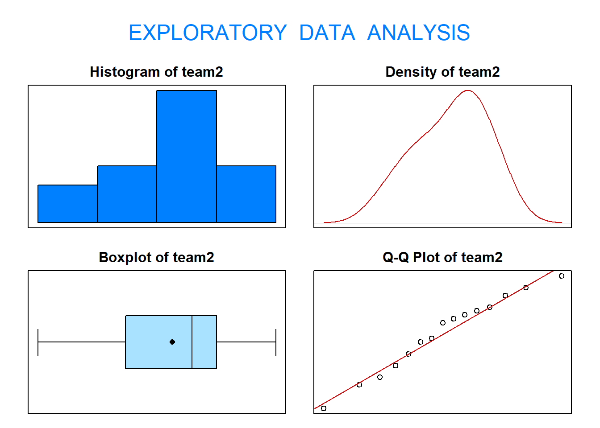

3 Example 2: Tennis Hypothesis Test
The Yonalasee tennis club has two systems to measure the speed of a tennis ball. The local tennis pros suspects one system (speed1) consistently records faster speeds. To test her suspicions, she sets up both systems and records the speeds of 12 serves (three serves from each side of the court). The values can be found saved TENNIS in RSTUDIO. with the variables speed1 and speed2. The recorded speeds are in kilometers per hour.
Does the evidence support the tennis pro’s suspicion? Use \(\alpha = 0.10\).
Save the data that is built into R, to your environment. E.g:
TENNIS <- TENNIS
3.1 Verifying normality
Note before we start that each system records the same 12 serves. Consequently, the serve times recorded by each system are dependent. Start the analysis by verifying the normality assumption required to use a paired t-test.
As this is paired data, we could do this using exploratory data analysis (EDA()).

## Size (n) Missing Minimum 1st Qu Mean Median TrMean 3rd Qu
## 12.000 0.000 -23.820 -10.060 -1.329 -6.410 -1.329 11.670
## Max Stdev Var SE Mean I.Q.R. Range Kurtosis Skewness
## 23.150 16.421 269.643 4.740 21.730 46.970 -1.443 0.304
## SW p-val
## 0.211The results from applying the function eda() to the differences between speed1 and speed2 suggest it is not unreasonable to assume the serve speed differences between speed1 and speed2 follow a normal distribution. Now, proceed with the five-step procedure.
3.2 Step 1 - Hypotheses
Hypotheses — To test the average difference (speed1 - speed2) in recorded speeds, the hypotheses are
\[H_0 : \mu_D = 0 \quad \text{versus} \quad H_1 : \mu_D > 0\]
We use \(\mu_D\) here as this is paired data so every point from speed2 can be subtracted from a matching point in speed1.
3.3 Step 2 - Choosing a Test Statistic
The test statistic chosen is \(\bar{D}\) because \(E[\bar{D}] = \mu_D\)
## [1] -1.329167The value of this test statistic is \(\bar{d} = −1.3292\).
We will determine the probability of obtaining this test statistic when the null hypothesis is true. We do this with standardisation and the probability is called the p-value.
The standardized test statistic is calculated under the assumption that \(H_0\) is true and its distribution are \[\frac{\bar{D}−\delta_0}{S_D/\sqrt{n_D}} \sim t_{12−1}\]
This is what will be used to complete the test.
3.4 Step 3 - Hypothesis Test Calculations
3.4.1 Finding your Rejection Region
Before we analyse our data we must find the rejection region:
Because the standardized test statistic is distributed \(t_11\) and \(H_1\) is a upper one-sided hypothesis, the rejection region is the \(t_{obs} > t_{0.90; 11}\)
From the statistical tables, or from R, the t-value that corresponds to our significance level (critical value) is \(t_{0.90; 11} = 1.3634\).
## [1] 12## [1] 1.36343This gives us the critical value and the significance level which make up the rejection region (what we will compare our result to).
3.4.2 Finding your standardised test statistic and p-value
The test we are running here is a one-sample t-test on the differences or a Paired t-test. In R this is:
##
## One Sample t-test
##
## data: Diff
## t = -0.2804, df = 11, p-value = 0.6078
## alternative hypothesis: true mean is greater than 0
## 95 percent confidence interval:
## -9.842155 Inf
## sample estimates:
## mean of x
## -1.329167##
## Paired t-test
##
## data: speed1 and speed2
## t = -0.2804, df = 11, p-value = 0.6078
## alternative hypothesis: true mean difference is greater than 0
## 95 percent confidence interval:
## -9.842155 Inf
## sample estimates:
## mean difference
## -1.329167This gives our standardized test statistic \(t_{obs} = \frac{\bar{d}−\delta_0}{s_D/\sqrt{n_D}} = -0.2804\) and the corresponding p-value \(\mathrm{P}(t_{11} \geq -0.2804) = 0.6078\).
-0.2804 is less than 1.3634 and our p-value is therefore greater than \(\alpha = 0.10\).
3.5 Step 4 - Statistical Conclusion
To draw our conclusions we need to consider our rejection region. Remember this is at the upper end of the t-distribtion for this one-sided test.
Is our standardised test statistic inside the rejection region? Is our p-value smaller than 0.05? Sketch the test and results on the distribution if it helps you
QUESTION: Do we reject our null hypothesis?
I. From the rejection region, we fail to reject \(H_0\) because the standardised test statistic is less than the critical value and hence in the rejection region i.e \(t_{obs} = -0.2804 < 1.3634\).
OR
- From the p-value, we fail to reject \(H_0\) because the p-value\(0.6078 > 0.1\).
Whichever method we use, we fail to reject \(H_0\).
3.6 Step 5 - English Conclusion
What does our statistical conclusion mean for the data and the purpose of the test?
Is there statistical evidence to suggest the the mean difference between tennis ball speeds is greater than zero?
QUESTION: Which of the following is the correct conclusion of our test?
The Hubble Space Telescope was put into orbit on April 25, 1990. Unfortunately, on June 25, 1990, a spherical aberration was discovered in Hubble’s primary mirror. To correct this, astronauts had to work in space. To prepare for the mission, two teams of astronauts practiced making repairs under simulated space conditions. Each team of astronauts went through 15 identical scenarios. The times to complete each scenario were recorded in days. The data are stored in the data frame HUBBLE in thr PASWR2 package.
We will aim to answer the questions:
Is one team better than the other?
And if not, can both teams complete the mission in less than 3 days?
Use a 5% significance level for all tests.
1a). Should we undertake a Welch two-sample t-test or a Paired t-test for this data?
Each team of astronauts went through 15 identical scenarios. Consequently, the repair times for the two teams are dependent. Start the analysis by verifying the normality assumption required to use a paired t-test.
1b) Does this data fit the required assumption of normality to perform a hypothesis test?
1b) We can verify the normality assumption of the data using exploratory data analysis (EDA()).

## Size (n) Missing Minimum 1st Qu Mean Median TrMean 3rd Qu
## 15.000 0.000 -2.400 -0.850 -0.100 -0.400 -0.100 1.300
## Max Stdev Var SE Mean I.Q.R. Range Kurtosis Skewness
## 2.600 1.499 2.247 0.387 2.150 5.000 -1.193 0.198
## SW p-val
## 0.462The results from applying the function eda() to the differences between team1 and team2 suggest it is not unreasonable to assume the repair time differences between team1 and team2 follow a normal distribution.
1c) Which set of hypotheses below is correct here?
To test if the average difference in repair times for team1 and team2 are different, the correct null and alternative hypotheses are:
$$ \[\begin{align} 1&. \quad H_0 : \mu_{T_1} - \mu_{T_2} = 0 \quad \text{verses} \quad H_1 : \mu_{T_1} - \mu_{T_2} < 0\\ 2&. \quad H_0 : \mu_{T_1} - \mu_{T_2} = 0 \quad \text{verses} \quad H_1 : \mu_{T_1} - \mu_{T_2} > 0\\ 3&. \quad H_0 : \mu_{D}=0 \quad \text{verses} \quad H_1 : \mu_{D} \neq 0\\ 4&. \quad H_0 : \mu_{D}=0 \quad \text{verses} \quad H_1 : \mu_{D} > 0\\ 5&. \quad H_0 : \mu_{D}=0 \quad \text{verses} \quad H_1 : \mu_{D} < 0 \end{align}\]$$
1c) What is the test statistic (before standardisation)?
1c) The test statistic chosen is \(\bar{D}\) because \(E[\bar{D}] = \mu_D\).
## [1] -0.1The value of this test statistic is \(\bar{d} = -0.1\)
1d) Step 3 - Rejection Region
Calculate the degrees of freedom,\(df\).
Calculate the critical value for this test.
1di) \(df = n-1 = 15-1\) so the standardized test statistic is distributed \(t_{14}\) and \(H_1\) is a two-sided hypothesis, the rejection region is the \(|t_{obs}| > t_{0.975; 14}\)
1dii) From the statistical tables, the critical value (t-value that corresponds to our significance level), \(t_{0.975; 14} = 2.1448\).
This can be found using R:
## [1] 2.1447871e) The standardized test statistic under the assumption that \(H_0\) is true and its distribution are \(\frac{\bar{d}−\delta_0}{s_d/\sqrt{n_D}} \sim t_{df}\).
Find the standardized test statistic and p-value using t.test().
1e) Our standardised test statistic = \(t_{obs}=\frac{\bar{d}−\delta_0}{s_d/\sqrt{n_D}}\).
##
## One Sample t-test
##
## data: Diff
## t = -0.25836, df = 14, p-value = 0.7999
## alternative hypothesis: true mean is not equal to 0
## 95 percent confidence interval:
## -0.9301447 0.7301447
## sample estimates:
## mean of x
## -0.1This gives our standardised test statistic as -0.25836 and the p-value as 0.7999. This code provides the p-value fully adjusted for a two-tailed test.
1f) Step 4 - Statistical Conclusion
Do we reject our null hypothesis?
1g) Step 5 - English Conclusion
Is there sufficient evidence to suggest one team is better than the other?
2ai) Does team1 fit the normality assumptions required?
2ai) We can verify the normality assumption of the data for team1 using exploratory data analysis (EDA()).

## Size (n) Missing Minimum 1st Qu Mean Median TrMean 3rd Qu
## 15.000 0.000 1.000 1.500 2.220 2.400 2.220 2.850
## Max Stdev Var SE Mean I.Q.R. Range Kurtosis Skewness
## 3.600 0.800 0.640 0.207 1.350 2.600 -1.352 -0.052
## SW p-val
## 0.613The results from applying the function eda() to the repair times for team1 suggest it is not unreasonable to assume the repair times for team1 follow a normal distribution. Now, proceed with the five-step procedure.
2aii) Which set of hypotheses below is correct here?
To test if team1 repair time is less than 3 days, the hypotheses are:
$$ \[\begin{align} 1&. \quad H_0 : \mu = 3 \quad \text{verses} \quad H_1 : \mu > 3\\ 2&. \quad H_0 : \mu = 3 \quad \text{verses} \quad H_1 : \mu \neq 3\\ 3&. \quad H_0 : \mu = 3 \quad \text{verses} \quad H_1 : \mu < 3\\ \end{align}\]$$
2aiii) What is the test statistic (before standardisation)?
2aiii) The test statistic chosen is \(\bar{X}\) because \(E[\bar{X}] = \mu\).
## [1] 2.22The value of this test statistic is \(\bar{x} = \frac{\sum^n_{i=1}x_i}{n}= 2.22\)
2aiv) Step 3 - Rejection Region
Calculate the degrees of freedom,\(df\) and the critical value for this test.
2aiv) \(df = n-1 = 15-1\) so the standardized test statistic is distributed \(t_{14}\) and \(H_1\) is a lower one-sided hypothesis, the rejection region is the \(t_{obs} > t_{0.05; 14}\)
From the statistical tables, the critical value (t-value that corresponds to our significance level), \(t_{0.05; 14} = -1.7613\).
This can be found using R:
## [1] -1.761312av) The standardized test statistic under the assumption that \(H_0\) is true and its distribution are \(\frac{\bar{X}−\mu_0}{S/\sqrt{n}} \sim t_{df}\).
Find the standardized test statistic and p-value using t.test().
2av) Our standardised test statistic = \(t_{obs}=\frac{\bar{x}−\mu_0}{s/\sqrt{n}}\).
##
## One Sample t-test
##
## data: team1
## t = -3.7753, df = 14, p-value = 0.001024
## alternative hypothesis: true mean is less than 3
## 95 percent confidence interval:
## -Inf 2.583896
## sample estimates:
## mean of x
## 2.22This gives our standardised test statistic as -3.7757 and the p-value \(\mathrm{P}(t_{14} \leq -3.7753)\) = 0.001024.
2avi) Step 4 - Statistical Conclusion
Do we reject our null hypothesis?
2avii) Step 5 - English Conclusion
Is there sufficient evidence that the team1 average mission repair time in less than 3 days?
Now for team2:
2bi) Does team2 fit the normality assumptions required?
2bi) We can verify the normality assumption of the data for team2 using exploratory data analysis (EDA()).

## Size (n) Missing Minimum 1st Qu Mean Median TrMean 3rd Qu
## 15.000 0.000 0.400 1.650 2.320 2.600 2.320 2.950
## Max Stdev Var SE Mean I.Q.R. Range Kurtosis Skewness
## 3.800 0.981 0.963 0.253 1.300 3.400 -1.074 -0.350
## SW p-val
## 0.848The results from applying the function eda() to the repair times for team2 suggest it is not unreasonable to assume the repair times for team2 follow a normal distribution. Now, proceed with the five-step procedure.
2bii) Which set of hypotheses below is correct here?
To test if team2 repair time is less than 3 days, the hypotheses are:
$$ \[\begin{align} 1&. \quad H_0 : \mu = 3 \quad \text{verses} \quad H_1 : \mu > 3\\ 2&. \quad H_0 : \mu = 3 \quad \text{verses} \quad H_1 : \mu \neq 3\\ 3&. \quad H_0 : \mu = 3 \quad \text{verses} \quad H_1 : \mu < 3\\ \end{align}\]$$
2biii) What is the test statistic (before standardisation)?
2biii) The test statistic chosen is \(\bar{X}\) because \(E[\bar{X}] = \mu\).
## [1] 2.32The value of this test statistic is \(\bar{x} = \frac{\sum^n_{i=1}x_i}{n}= 2.32\)
2biv) Step 3 - Rejection Region
Calculate the degrees of freedom,\(df\) and the critical value for this test.
2biv) \(df = n-1 = 15-1\) so the standardized test statistic is distributed \(t_{14}\) and \(H_1\) is a lower one-sided hypothesis, the rejection region is the \(t_{obs} > t_{0.05; 14}\)
From the statistical tables, the critical value (t-value that corresponds to our significance level), \(t_{0.05; 14} = -1.7613\).
This can be found using R:
## [1] -1.761312bv) The standardized test statistic under the assumption that \(H_0\) is true and its distribution are \(\frac{\bar{X}−\mu_0}{S/\sqrt{n}} \sim t_{df}\).
Find the standardized test statistic and p-value using t.test().
2bv) Our standardised test statistic = \(t_{obs}=\frac{\bar{x}−\mu_0}{s/\sqrt{n}}\).
##
## One Sample t-test
##
## data: team2
## t = -2.6835, df = 14, p-value = 0.008911
## alternative hypothesis: true mean is less than 3
## 95 percent confidence interval:
## -Inf 2.766309
## sample estimates:
## mean of x
## 2.32This gives our standardised test statistic as -2.6835 and the p-value \(\mathrm{P}(t_{14} \leq -2.6835)\) = 0.008911.
2bvi) Step 4 - Statistical Conclusion
Do we reject our null hypothesis?
2avii) Step 5 - English Conclusion
Is there sufficient evidence that the team1 average mission repair time in less than 3 days?
This means that for Team 1 and Team 2: